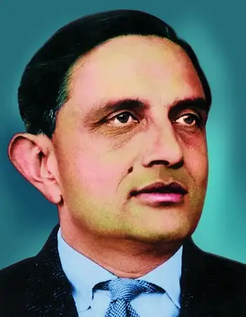
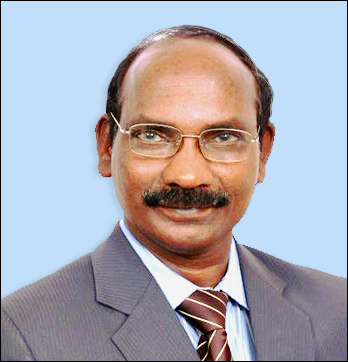
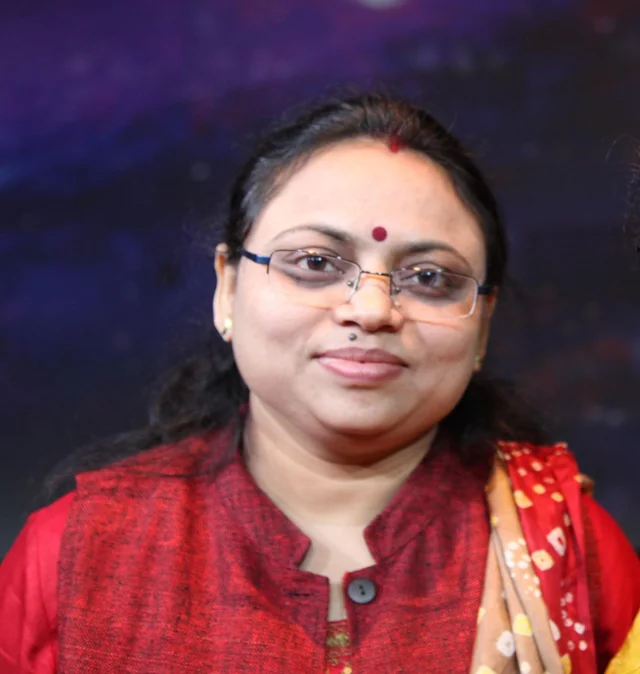
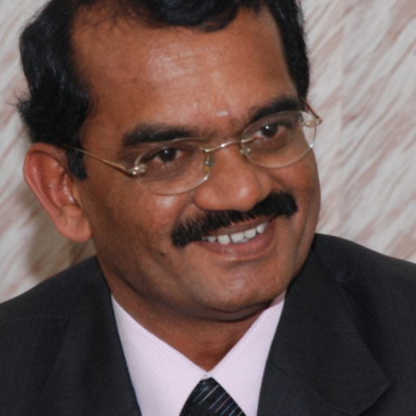

Space technology refers to the tools and machines we use to explore space. This includes satellites that help with communication and weather, rockets that carry things into space, space probes that study other planets, and space stations where astronauts live. It helps us learn about the universe and improve life on Earth!
Why It's Important
Space technology impacts our world by enabling GPS navigation, weather forecasts, climate monitoring, and scientific discovery. The field offers limitless possibilities for exploration and innovation.
Fun Facts
Mangalyaan is a spaceship that went to Mars in 2013, making India the first country to reach Mars on its first try. That's super cool!
Chandrayaan-1 was India's first trip to the moon in 2008, and it found water on the moon, which was a big surprise!
ISRO, India's space agency, launched 104 satellites all at once in 2017, breaking a world record for the most satellites sent into space in one go!
The first Indian in space was Rakesh Sharma, who flew on a Soviet spacecraft in 1984. He even said, "Saare Jahan Se Achha" when he saw India from space!
ISRO's PSLV rocket is known as the "workhorse" of the Indian space program because it has successfully launched many satellites into space.
The Gaganyaan mission will send Indian astronauts into space for the first time, and it's planned to happen soon!
ISRO is planning a mission called Aditya-L1 to study the sun and learn about solar activities that affect Earth.
GIS and the Importance of GIS Day
What is GIS?
Geographic Information System, is a tool that helps us make maps and understand where things are in the world. It collects information about places, like roads and rivers, and shows it in a way that's easy to see. This helps people make good decisions about things like building parks or keeping the environment safe. It’s like using a super smart map!
GIS in Space Technology
GIS in space technology helps us use data from satellites to create maps and analyze information about Earth and other planets. It plays a key role in understanding environmental changes, planning space missions, and managing disasters. In short, GIS makes the data we get from space easier to understand and use!
Why GIS Day Matters
GIS Day is celebrated globally to promote the power of GIS in addressing challenges like climate change and urban planning. Students are encouraged to learn about mapping and participate in GIS events.
Learn about some of the most inspiring scientists from ISRO who have shaped India's space program.

Dr. Vikram Sarabhai
Known as the Father of the Indian Space Program, Dr. Sarabhai established ISRO and paved the way for India's space missions.
Dr. APJ Abdul Kalam
A visionary in space and defense technology, Dr. Kalam contributed to India's missile development and served as the President of India.

Dr. K. Sivan
Led ISRO as chairman and played a crucial role in the Chandrayaan-2 mission and other space missions.

Dr. Ritu Karidhal
Known as the "Rocket Woman of India," Dr. Karidhal was a mission director for Mars Orbiter Mission and Chandrayaan-2.

Dr. Mylswamy Annadurai
Instrumental in India's lunar and Mars missions, Dr. Annadurai played a key role in Chandrayaan-1 and Mangalyaan.
Opportunities from ISRO for Students
ISRO (Indian Space Research Organisation) offers several exciting opportunities for students who are interested in space technology and exploration. By participating in these programs, you can learn directly from experts and get hands-on experience in the field of space science.
Young Scientist Programme (YUVIKA)
The YUVIKA program, also known as the Young Scientist Programme, is designed for school students to learn about space technology, satellite communication, and more. Selected students get to visit ISRO centers and participate in various educational activities.
Internships and Projects
ISRO offers internships and project opportunities for high school and college students. These projects allow students to gain practical experience and work on space-related research under ISRO scientists.
Competitions and Contests
ISRO organizes various competitions, like drawing and essay contests, which encourage students to showcase their creativity and knowledge about space. These contests often come with rewards and recognition at the national level.
ISRO's Online Learning Platform (e-CLASS)
ISRO also provides online courses and video lectures on space technology, which are accessible to students across the country. This platform is a great way to start learning from home.
For more details: Visit the official ISRO website to explore current programs and application deadlines.
Opportunities from NASA for Students
NASA (National Aeronautics and Space Administration) offers various programs and opportunities for students interested in space, engineering, and science. These programs allow students to learn from professionals and experience hands-on activities related to space exploration.
NASA Internships
NASA offers internship opportunities for high school and college students. These internships provide hands-on experience in NASA’s laboratories, research facilities, and projects, where students work with scientists and engineers on real-world space missions.
NASA’s STEM Engagement Programs
NASA has a range of STEM programs that provide students with learning materials, online courses, and interactive resources. These are designed to deepen understanding in science, technology, engineering, and mathematics.
Student Challenges and Contests
NASA holds various challenges and contests, such as the Artemis Moon Pod Essay Contest and the NASA App Development Challenge. These competitions allow students to contribute ideas to future missions and even design their own space-related projects.
NASA’s Virtual Programs and Resources
NASA’s website offers virtual tours of its facilities, video lectures, and educational content accessible to students worldwide. Resources include NASA’s Eyes on the Solar System, which allows students to explore planets and space missions virtually.
For more details: Visit the NASA STEM website to explore current programs, application requirements, and deadlines.
Opportunities from ESA for Students
The European Space Agency (ESA) provides various exciting opportunities for students interested in space science and technology. ESA’s programs allow students to gain practical experience and develop their skills by working with space professionals on missions and research projects.
ESA Academy
ESA Academy offers programs for students in high school and university, including training courses, workshops, and space-related project opportunities. These programs are designed to enhance students’ understanding of space science and engineering.
Young Graduate Trainee Program
For recent graduates, ESA’s Young Graduate Trainee (YGT) program offers one-year trainee positions in technical and administrative fields related to space. Trainees work on ESA projects, gaining hands-on experience and contributing to ongoing missions.
Student Challenges and Competitions
ESA organizes various challenges and competitions for students, such as the CanSat competition, where students design and launch mini-satellites, and the Climate Detectives project, where students use real Earth observation data to investigate environmental issues.
ESA’s Online Resources and Outreach
ESA’s website provides a range of online resources for students, including virtual tours, educational videos, and science articles on current missions. These resources are designed to inspire and educate students about space exploration.
For more details: Visit the ESA Education website to explore current programs and application deadlines.
Events and Community
Join a space or GIS club in your school, participate in upcoming events, and join our discussion forum to share ideas and ask questions!
GIS Day Celebration: Participate in online workshops, events, and GIS activities.
Space Webinars and Competitions
Joining space-related events and communities can help students connect with peers, learn from experts, and participate in exciting activities. Explore opportunities below from space agencies and student communities!
ISRO Events and Community
YUVIKA Program Workshops: Workshops under ISRO’s Young Scientist Programme, where students learn from ISRO scientists.
Annual Space Quiz: An online quiz competition on space technology, astronomy, and science.
ISRO Open House: Special event days at ISRO centers where students can tour facilities and learn about projects.
Explore careers such as Aerospace Engineer, Satellite Data Analyst, GIS Specialist, and Remote Sensing Technician. Each role contributes to advancements in space and Earth sciences.
Technical Events
1. Elocution Competition
Purpose: Develops public speaking skills
Format:
Topic assigned 20 minutes before the speech
Focus on clarity, confidence, and persuasive communication
Resources: Study materials are available on the official website
2. Drawing Competition
Purpose: Showcases artistic talents
Themes: Space exploration, GIS, Earth sciences, remote sensing, and geographical features
Focus: Encourages creativity and an appreciation for the connection between art and science
3. Quiz Competition
Duration: 2-day event
Structure:
Day 1: Group competition
Day 2: Individual finals
Focus: Combines general knowledge with subject-specific questions, promoting teamwork, quick thinking, and a passion for learning
Event Highlights
Encourages: Creativity, critical thinking, and problem-solving
Develops Skills in: Public speaking, teamwork, and leadership
Promotes: Art-science interconnectedness, intellectual curiosity, and a competitive spirit
Participation Benefits
Skill Enhancement: Builds academic and professional competencies
Personal Growth: Boosts confidence and self-expression
Networking Opportunities: Facilitates collaboration and connections